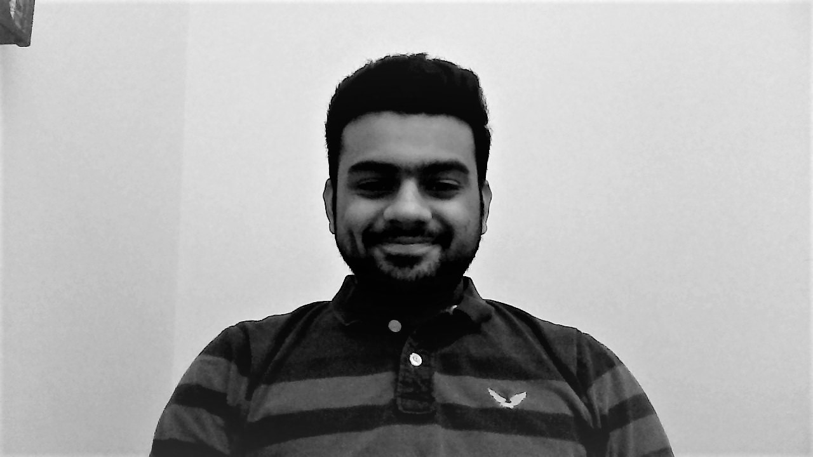
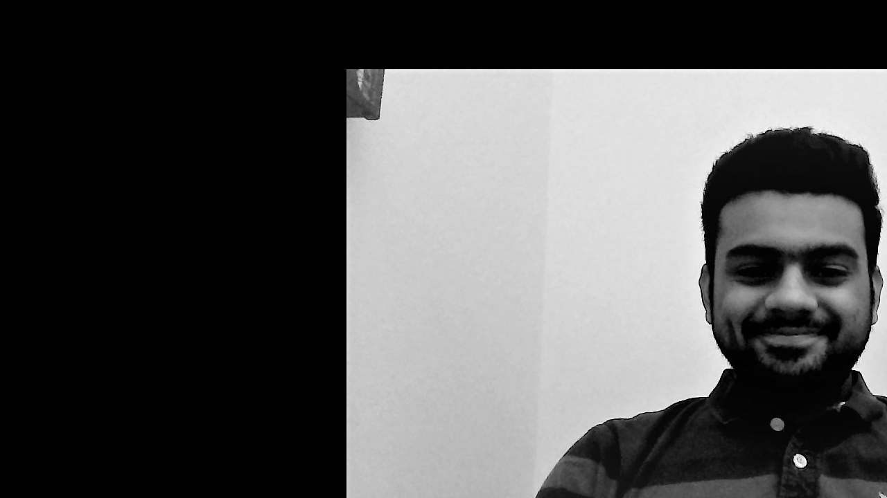
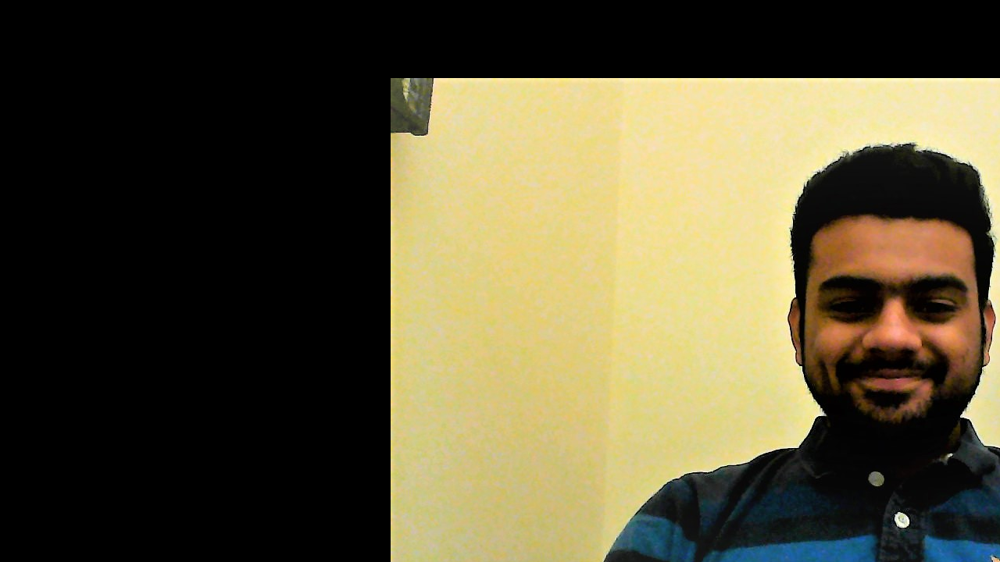
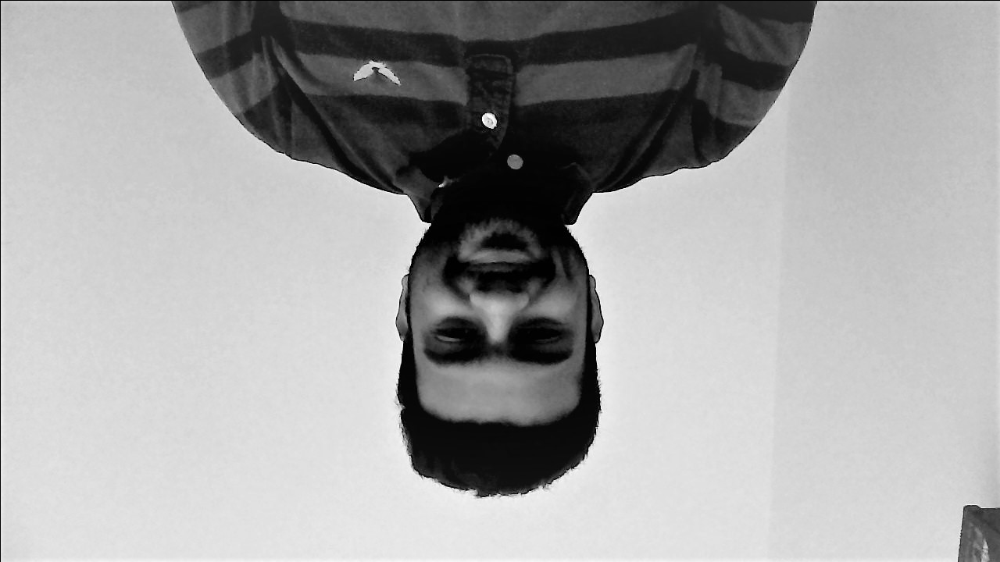
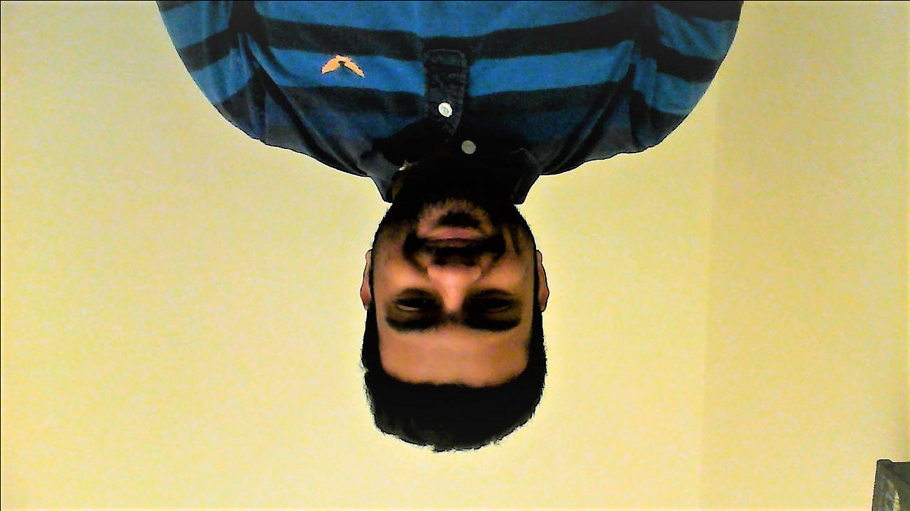
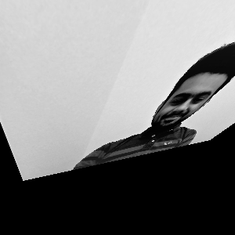
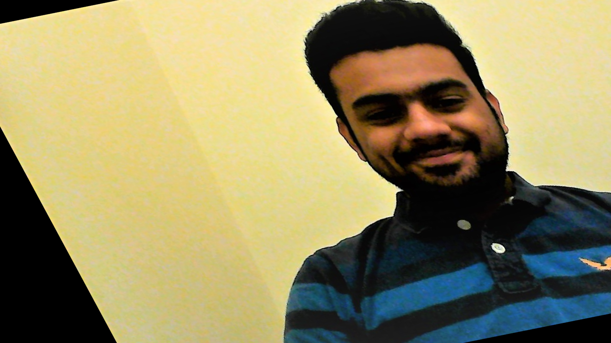
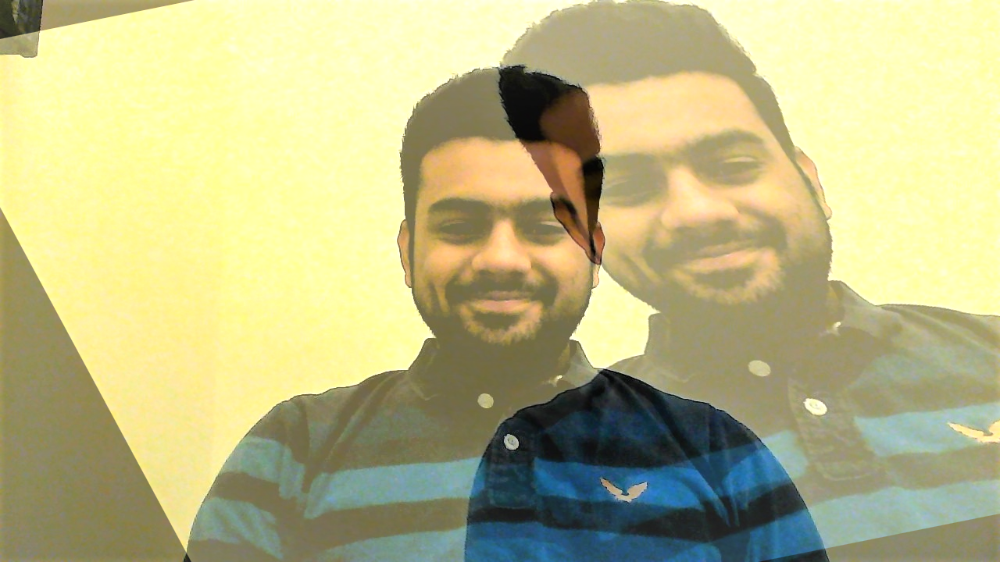
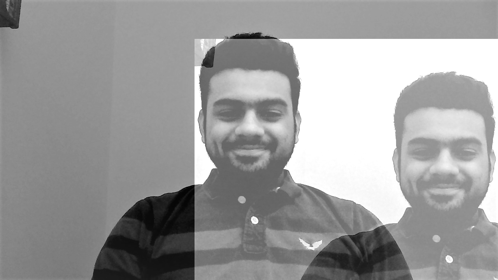
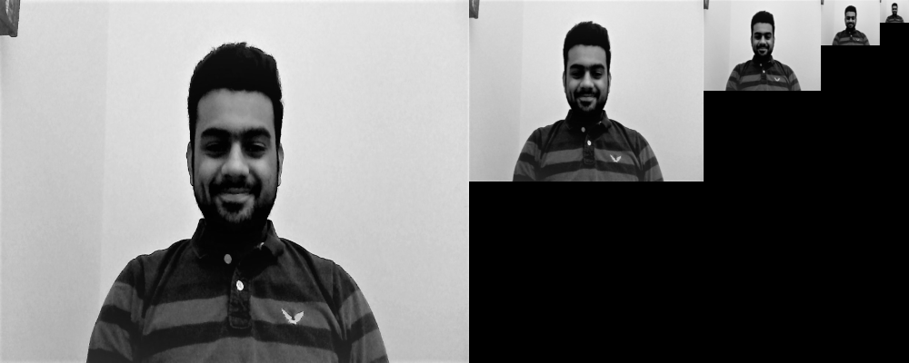

code
import numpy as np import cv2 from matplotlib import pyplot as plt #greyscale img=cv2.imread('DeepakKanuri.jpg',0) #img=cv2.cvtColor(img,cv2.COLOR_BGR2RGB) img1=cv2.imread('DeepakKanuri.jpg',1) #img1=cv2.cvtColor(img1,cv2.COLOR_BGR2RGB) cv2.imwrite('Deepak.png',img) rows,cols = img.shape #blur blur=cv2.blur(img1,(20,20)) cv2.imwrite('blur.png',blur) #translated trans = np.float32([[1,0,500],[0,1,100]]) transim = cv2.warpAffine(img,trans,(cols,rows)) cv2.imwrite('translatedimage.png',transim) #rotated rotate = cv2.getRotationMatrix2D((cols/2,rows/2),180,1) rotateim = cv2.warpAffine(img,rotate,(cols,rows)) cv2.imwrite('rotatedim.png',rotateim) #affine transformation pts1 = np.float32([[100,50],[300,50],[150,200]]) pts2 = np.float32([[50,100],[300,50],[200,250]]) affine = cv2.getAffineTransform(pts1,pts2) affineim = cv2.warpAffine(img1,affine,(cols,rows)) cv2.imwrite('affineim.png',affineim) #perspective transformation rows,cols,ch=img1.shape pts1 = np.float32([[56,65],[168,52],[28,187],[189,190]]) pts2 = np.float32([[0,0],[100,0],[0,100],[100,100]]) perspective = cv2.getPerspectiveTransform(pts1,pts2) perspectiveim = cv2.warpPerspective(img,perspective,(300,300)) cv2.imwrite('perspective.png',perspectiveim) #plt.subplot(121),plt.imshow(img),plt.title('Input') #plt.subplot(122),plt.imshow(dst),plt.title('Output') #plt.show() #blended image img1 = cv2.imread('DeepakKanuri.jpg') img2 = cv2.imread('affineim.png') blended = cv2.addWeighted(img1,0.7,img2,0.5,0) cv2.imwrite('blended.png',blended) #Gaussian pyramid BLACK=[0,0,0] img=cv2.resize(img,(800,800)) g=img.copy() g1=img.copy() for i in range(3): g=cv2.pyrDown(g) row,col=g1.shape row1,col1=g.shape x=row-row1 y=col-col1 g= cv2.copyMakeBorder(g,int(x/2),int(x/2),int(y/2),int(y/2),cv2.BORDER_CONSTANT,value=BLACK) g1=np.concatenate((g1,g),axis=0) g1=cv2.resize(g1,(400,1000)) cv2.imwrite('gaussian.png',g1)
the source image is
Gray scale image
the translated image is
 the rotated image is
 the blurred image is
the perspective image is
the affine transformed image is
the blended image is
 the gaussian pyramid image is
